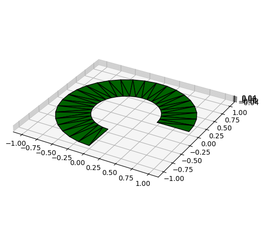

How to create and visualize quadrics#
[1]:
import os, sys
sys.path.insert(0, os.path.abspath(".."))
import geoclide as gc
Disk, annulus and partial annulus#
[2]:
disk = gc.Disk(radius=1.)
disk.plot(color='green', edgecolor='k')
annulus = gc.Disk(radius=1., inner_radius=0.5)
annulus.plot(color='green', edgecolor='k')
partial_annulus = gc.Disk(radius=1., inner_radius=0.5, phi_max=270)
partial_annulus.plot(color='green', edgecolor='k')

Sphere and partial spheres#
[3]:
sphere = gc.Sphere(radius=1.)
sphere.plot(color='blue', edgecolor='k')
partial_sphere1 = gc.Sphere(radius=1., z_max=0.5)
partial_sphere1.plot(color='blue', edgecolor='k')
partial_sphere2 = gc.Sphere(radius=1., z_max=0.5, phi_max=180.)
partial_sphere2.plot(color='blue', edgecolor='k')
## Prolate and oblate spheroids
[4]:
prolate = gc.Spheroid(radius_xy=1, radius_z=3)
prolate.plot(color='red', edgecolor='k')
oblate = gc.Spheroid(radius_xy=1, radius_z=0.8)
oblate.plot(color='cyan', edgecolor='k')